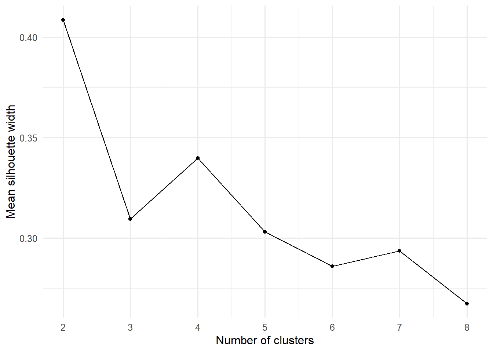
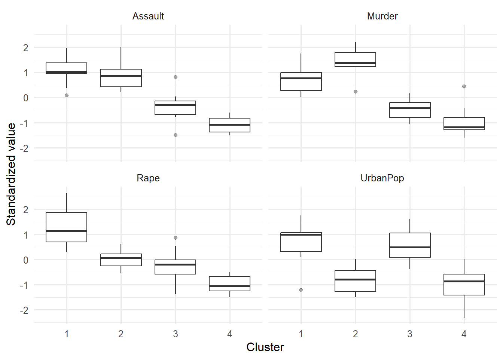

flowchart LR
A["Construct<br>무엇을 측정하는가?"] --> B["Items<br>어떤 관찰변수인가?"]
B --> C["EFA / Theory<br>가능한 구조"]
C --> D["CFA<br>측정모형 검증"]
D --> E["Reliability & Validity<br>점수 해석 근거"]
E --> F["Invariance<br>집단 간 비교 가능성"]
F --> G["SEM<br>잠재변수 간 구조경로"]
G --> H["Sensitivity<br>대안모형·잔차·복제"]
측정모형과 구조방정식
Reliability, EFA, CFA, SEM, Invariance, and an Optional Clustering Lab
13주차 학습목표
Note
이번 주 학습을 마치면 다음을 할 수 있어야 합니다.
- 관찰변수, 잠재변수, 측정오류를 구분한다.
- 합성점수 회귀와 latent-variable model의 차이를 설명한다.
- Cronbach’s alpha를 단일차원성·타당성의 자동 판정기로 사용하지 않는다.
- omega/composite reliability와 AVE가 답하는 질문을 구분한다.
- EFA와 CFA의 목적, 자료분할, 회전, 추정법을 구분한다.
- 연속형 지표와 ordinal 지표에 맞는 SEM 추정법을 선택한다.
- 적합도 지수를 절단값 하나로 pass/fail하지 않고, 잔차·계수·모형복잡성과 함께 평가한다.
- modification index를 이론 없는 모형개조 도구로 사용하지 않는다.
- 측정동일성의 configural, metric, scalar 단계를 설명한다.
- 구조경로의 화살표가 설계 없이 인과성을 만들어내지 않음을 이해한다.
- k-means clustering의 scaling, k 선택, 초기값, 안정성을 감사한다.
- GenAI를 lavaan syntax와 이론모형 사이의 measurement-model auditor로 활용한다.
오늘의 핵심 질문
우리가 만든 척도는 같은 구성개념을 안정적으로 측정하며, 그 측정이 집단과 조건을 넘어 비교 가능한가?
Important
SEM은 복잡한 화살표를 그리는 기술이 아니라 측정모형과 구조모형을 동시에 명시하고, 그 가정이 데이터와 얼마나 일치하는지 평가하는 체계입니다.
1. GenAI 활용 원칙
이번 주의 순서는 다음과 같습니다.
Define → Diagram → Translate → Fit → Diagnose → Justify
lavaan 코드를 대신 생성하게 하기 전에
다음은 내가 이론적으로 정의한 측정모형이다.
Trust =~ trust_1 + trust_2 + trust_3
Usefulness =~ useful_1 + useful_2 + useful_3
Continuance =~ continue_1 + continue_2 + continue_3
구조가설:
Trust → Usefulness → Continuance
Trust → Continuance
다음을 SEM reviewer처럼 점검하라.
1. 각 잠재변수의 개념적 정의와 문항 내용이 일치하는지 질문하라.
2. 식별을 위해 어떤 scale-setting constraint가 필요한지 설명하라.
3. lavaan syntax가 경로도와 정확히 일치하는지 한 줄씩 대조하라.
4. ordinal 문항일 때의 estimator와 결측처리 제한을 점검하라.
5. fit index 절단값만으로 결론내리지 않도록 필요한 잔차·계수·부적절해를 질문하라.
6. modification index를 보기 전에 이론적으로 허용 가능한 대안만 목록화하라.
임의의 오차공분산을 추가하지 말라.금지할 사용 방식
- alpha를 높이기 위해 문항을 자동 삭제하기
- modification index 순서대로 경로를 추가하기
- 동일 표본에서 EFA와 CFA를 반복하고 “검증”이라고 부르기
- fit가 좋아질 때까지 모형을 바꾸고 최종 모형만 보고하기
- 잠재변수 화살표를 causal proof로 해석하기
- 실제 설문 원자료나 개인정보를 공개형 GenAI에 업로드하기
2. 준비
한 번만 설치
install.packages(c(
"tidyverse", "lavaan", "psych",
"semTools", "semPlot", "cluster",
"factoextra", "mclust"
))기본 패키지
library(tidyverse)
library(lavaan)
library(psych)
theme_set(theme_minimal(base_size = 12))Part I. 측정모형을 먼저 생각하기
3. 관찰변수와 잠재변수
- Observed variable: 직접 기록한 문항 응답, 로그, 수행시간
- Latent variable: 여러 관찰지표로 추론하는 이론적 구성개념
- Measurement error: 관찰값 중 잠재구성개념으로 설명되지 않는 부분
예를 들어 trust_1 = 6이라는 응답은 신뢰 그 자체가 아닙니다.
\[ X_j=\lambda_j\eta+\epsilon_j \]
- \(X_j\): j번째 문항
- \(\eta\): 잠재구성개념
- \(\lambda_j\): factor loading
- \(\epsilon_j\): 문항 고유분산과 측정오류
flowchart LR
T(("Trust")) --> T1["trust_1"]
T --> T2["trust_2"]
T --> T3["trust_3"]
E1(("e₁")) --> T1
E2(("e₂")) --> T2
E3(("e₃")) --> T3
합성점수와 latent score
| 접근 | 장점 | 한계 |
|---|---|---|
| 문항 평균 | 간단하고 재현하기 쉬움 | 측정오류와 문항별 loading 차이를 직접 모델링하지 않음 |
| CFA/SEM | loading·오차·잠재상관을 명시 | 더 많은 가정, 식별, 표본정보, 진단 필요 |
4. HCI 척도 데이터 생성
세 구성개념을 가정합니다.
- Trust: 시스템을 믿고 의존할 의향
- Usefulness: 시스템이 과업에 도움이 된다는 평가
- Continuance: 향후 계속 사용할 의도
set.seed(20261301)
n_sem <- 520
latent_data <- tibble(
participant_id = sprintf("S%03d", 1:n_sem),
expertise = factor(
sample(
c("Novice", "Experienced"),
n_sem,
replace = TRUE
)
),
trust_latent = rnorm(n_sem)
) |>
mutate(
usefulness_latent =
0.55 * trust_latent +
rnorm(n_sem, 0, sqrt(1 - 0.55^2)),
continuance_latent =
0.25 * trust_latent +
0.55 * usefulness_latent +
rnorm(n_sem, 0, 0.70)
)
make_indicator <- function(latent, loading) {
loading * latent +
rnorm(length(latent), 0, sqrt(1 - loading^2))
}
sem_continuous <- latent_data |>
transmute(
participant_id,
expertise,
trust_1 = make_indicator(trust_latent, 0.82),
trust_2 = make_indicator(trust_latent, 0.76),
trust_3 = make_indicator(trust_latent, 0.70),
useful_1 = make_indicator(usefulness_latent, 0.84),
useful_2 = make_indicator(usefulness_latent, 0.78),
useful_3 = make_indicator(usefulness_latent, 0.72),
continue_1 = make_indicator(continuance_latent, 0.86),
continue_2 = make_indicator(continuance_latent, 0.79),
continue_3 = make_indicator(continuance_latent, 0.73)
)
item_names <- c(
paste0("trust_", 1:3),
paste0("useful_", 1:3),
paste0("continue_", 1:3)
)
glimpse(sem_continuous)Rows: 520
Columns: 11
$ participant_id <chr> "S001", "S002", "S003", "S004", "S005", "S006", "S007",…
$ expertise <fct> Experienced, Experienced, Experienced, Experienced, Exp…
$ trust_1 <dbl> 1.5605917, -1.1198263, 0.3577587, -0.4151902, 0.9128743…
$ trust_2 <dbl> 2.41379915, 0.13449413, 0.72614768, -0.51680831, 0.1932…
$ trust_3 <dbl> 1.13638748, -0.07733045, -0.62109033, -0.36100661, 0.81…
$ useful_1 <dbl> -0.04436665, 0.67068635, 2.12169093, 0.53406020, 0.9349…
$ useful_2 <dbl> -0.10423952, -0.22037922, 1.42877212, -0.39769407, 3.05…
$ useful_3 <dbl> 0.78780436, -0.52480614, 0.40868216, 0.84085949, 0.9634…
$ continue_1 <dbl> 1.18812180, 0.43168268, 0.61820602, -0.72487210, 1.0417…
$ continue_2 <dbl> -0.5914039, -0.4242173, 0.1522465, 0.3225544, 1.4962088…
$ continue_3 <dbl> 0.4668279918, 0.5648361041, 0.5036873440, -0.0008743062…5점 ordinal 응답 만들기
to_likert <- function(x) {
cut(
x,
breaks = c(-Inf, -1.0, -0.30, 0.30, 1.0, Inf),
labels = 1:5,
ordered_result = TRUE
)
}
sem_ordinal <- sem_continuous |>
mutate(
across(
all_of(item_names),
to_likert
)
)
sem_ordinal |>
select(all_of(item_names)) |>
glimpse()Rows: 520
Columns: 9
$ trust_1 <ord> 5, 1, 4, 2, 4, 1, 1, 4, 2, 4, 4, 5, 3, 2, 2, 1, 4, 4, 5, 1,…
$ trust_2 <ord> 5, 3, 4, 2, 3, 2, 2, 4, 1, 3, 5, 3, 2, 3, 4, 2, 3, 3, 3, 2,…
$ trust_3 <ord> 5, 3, 2, 2, 4, 3, 2, 3, 3, 2, 4, 4, 3, 3, 3, 2, 4, 5, 3, 1,…
$ useful_1 <ord> 3, 4, 5, 4, 4, 1, 3, 4, 1, 3, 2, 2, 3, 4, 1, 4, 4, 4, 4, 3,…
$ useful_2 <ord> 3, 3, 5, 2, 5, 1, 5, 2, 3, 4, 1, 2, 2, 2, 2, 5, 2, 4, 3, 3,…
$ useful_3 <ord> 4, 2, 4, 4, 4, 1, 4, 2, 3, 4, 1, 2, 2, 4, 3, 3, 2, 4, 4, 1,…
$ continue_1 <ord> 5, 4, 4, 2, 5, 1, 2, 5, 1, 4, 1, 4, 1, 3, 2, 3, 1, 3, 3, 1,…
$ continue_2 <ord> 2, 2, 3, 4, 5, 1, 4, 5, 1, 2, 1, 4, 4, 3, 4, 3, 4, 4, 1, 1,…
$ continue_3 <ord> 4, 4, 4, 3, 4, 1, 3, 5, 2, 2, 2, 4, 1, 2, 3, 4, 1, 3, 2, 1,…
Note
실제 연구에서는 문항이 ordinal이라는 이유만으로 언제나 같은 estimator를 써야 하는 것이 아니라, 응답범주 수, 분포, 표본, 결측, 모형을 함께 고려합니다. 다만 ordinal endogenous indicator를 명시하면 lavaan은 WLSMV 계열로 전환합니다.
5. 탐색용 표본과 확인용 표본 분리
같은 자료에서 EFA로 구조를 찾고 CFA로 같은 구조를 확인하면 검증이 과도하게 낙관적일 수 있습니다.
set.seed(20261302)
discovery_id <- sample(
sem_ordinal$participant_id,
size = floor(0.50 * nrow(sem_ordinal))
)
discovery_ordinal <- sem_ordinal |>
filter(participant_id %in% discovery_id)
confirmation_ordinal <- sem_ordinal |>
filter(!participant_id %in% discovery_id)
confirmation_continuous <- sem_continuous |>
filter(!participant_id %in% discovery_id)
c(
discovery = nrow(discovery_ordinal),
confirmation = nrow(confirmation_ordinal)
) discovery confirmation
260 260
Warning
표본분할이 불가능한 작은 자료라면 EFA 결과를 탐색적으로 표시하고, 독립 표본·후속연구에서 CFA를 수행하는 것이 더 정직합니다.
Part II. Reliability는 무엇을 말하는가?
6. Cronbach’s alpha
\[ \alpha = \frac{k}{k-1} \left( 1- \frac{\sum_{j=1}^{k}s_j^2}{s_T^2} \right) \]
Alpha는 문항들의 공분산과 문항 수에 기반한 내적 일관성 지표입니다.
Alpha가 높아도 자동으로 성립하지 않는 것
- 단일차원성
- 타당성
- 문항의 비중복성
- 집단 간 동일한 측정
- 개인 수준 점수의 정확성
- 인과적 구성개념
Alpha의 주요 조건
Alpha를 척도 신뢰도로 해석하려면 문항들이 대체로 같은 구성개념을 측정하고, loading 구조에 관한 조건이 필요합니다. 문항 수가 많아지면 중복문항으로도 alpha가 높아질 수 있습니다.
계산
trust_items_numeric <- discovery_ordinal |>
transmute(
across(
starts_with("trust_"),
as.numeric
)
)
trust_alpha <- psych::alpha(
trust_items_numeric,
check.keys = TRUE
)
trust_alpha$total raw_alpha std.alpha G6(smc) average_r S/N ase mean sd
0.782325 0.782252 0.7068689 0.544935 3.592465 0.02338404 2.937179 1.058107
median_r
0.5341214문항삭제보다 먼저 할 일
- 역문항 코딩 오류 확인
- 문항 내용과 구성개념 확인
- 문항분포와 ceiling/floor 확인
- 요인구조와 cross-loading 확인
- 하위집단별 다르게 작동하는 문항 확인
- 척도 사용 목적과 점수 산출방식 확인
Warning
alpha if item deleted가 조금 높아진다는 이유만으로 문항을 제거하지 않습니다. 내용타당도와 독립자료에서의 재현성을 함께 봅니다.
7. Omega와 composite reliability
CFA 이후에는 추정된 loading과 error variance를 이용한 composite reliability를 고려할 수 있습니다.
semTools::compRelSEM(cfa_fit)
semTools::AVE(cfa_fit)| 지표 | 핵심 질문 |
|---|---|
| Alpha | 특정 조건 아래 합성점수의 내적 일관성은 어느 정도인가? |
| Omega / Composite reliability | 서로 다른 loading과 오차를 반영한 점수 신뢰도는 어느 정도인가? |
| AVE | 지표분산 중 구성개념이 설명하는 평균 비율은 어느 정도인가? |
Note
AVE는 reliability와 같은 개념이 아닙니다. 지표 하나만으로 척도의 타당성을 pass/fail하지 않습니다.
Part III. Exploratory Factor Analysis
8. EFA의 목적
EFA는 다음 상황에서 사용합니다.
- 새로운 척도의 초기 구조 탐색
- 문항들이 몇 개의 요인으로 묶이는지 불확실함
- cross-loading 가능성을 열어둠
- 이론모형을 만들기 전 discovery 단계
요인 수를 정하는 근거
- 이론과 척도 설계
- parallel analysis
- scree plot
- loading pattern과 해석가능성
- 각 요인의 지표 수와 안정성
- 대안 요인수의 민감도
Warning
Eigenvalue > 1 규칙 하나만으로 요인 수를 결정하지 않습니다.
9. Ordinal 문항의 EFA
먼저 polychoric correlation을 계산합니다.
ordinal_for_efa <- discovery_ordinal |>
select(all_of(item_names)) |>
mutate(
across(everything(), as.numeric)
)
poly_result <- psych::polychoric(ordinal_for_efa)
poly_cor <- poly_result$rhoParallel analysis
psych::fa.parallel(
poly_cor,
n.obs = nrow(ordinal_for_efa),
fa = "fa",
fm = "minres",
n.iter = 100
)Oblique rotation을 사용한 EFA
three_factor_efa <- psych::fa(
poly_cor,
nfactors = 3,
n.obs = nrow(ordinal_for_efa),
fm = "minres",
rotate = "oblimin"
)
print(
three_factor_efa,
cut = 0.30,
sort = TRUE
)- Orthogonal rotation: 요인상관을 0으로 제한
- Oblique rotation: 요인상관을 허용
HCI·심리·사회과학의 구성개념은 상관될 가능성이 높으므로 oblique rotation이 더 현실적인 출발점인 경우가 많습니다.
Part IV. Confirmatory Factor Analysis
10. CFA 모형 명시
cfa_model <- '
trust =~ trust_1 + trust_2 + trust_3
usefulness =~ useful_1 + useful_2 + useful_3
continuance =~ continue_1 + continue_2 + continue_3
'lavaan syntax
| 기호 | 의미 | 예시 |
|---|---|---|
=~ |
latent variable을 indicators로 측정 | trust =~ trust_1 + trust_2 |
~ |
regression path | usefulness ~ trust |
~~ |
variance 또는 covariance | trust ~~ usefulness |
~ 1 |
intercept 또는 mean | trust_1 ~ 1 |
:= |
정의된 모수 | indirect := a*b |
11. Ordinal CFA: WLSMV
cfa_fit <- cfa(
model = cfa_model,
data = confirmation_ordinal,
ordered = item_names,
estimator = "WLSMV",
std.lv = TRUE
)
summary(
cfa_fit,
fit.measures = TRUE,
standardized = TRUE
)lavaan 0.6-19 ended normally after 19 iterations
Estimator DWLS
Optimization method NLMINB
Number of model parameters 48
Number of observations 260
Model Test User Model:
Standard Scaled
Test Statistic 7.491 16.930
Degrees of freedom 24 24
P-value (Chi-square) 0.999 0.852
Scaling correction factor 0.569
Shift parameter 3.754
simple second-order correction
Model Test Baseline Model:
Test statistic 2184.687 1239.033
Degrees of freedom 36 36
P-value 0.000 0.000
Scaling correction factor 1.786
User Model versus Baseline Model:
Comparative Fit Index (CFI) 1.000 1.000
Tucker-Lewis Index (TLI) 1.012 1.009
Robust Comparative Fit Index (CFI) 1.000
Robust Tucker-Lewis Index (TLI) 1.012
Root Mean Square Error of Approximation:
RMSEA 0.000 0.000
90 Percent confidence interval - lower 0.000 0.000
90 Percent confidence interval - upper 0.000 0.029
P-value H_0: RMSEA <= 0.050 1.000 0.996
P-value H_0: RMSEA >= 0.080 0.000 0.000
Robust RMSEA 0.000
90 Percent confidence interval - lower 0.000
90 Percent confidence interval - upper 0.043
P-value H_0: Robust RMSEA <= 0.050 0.973
P-value H_0: Robust RMSEA >= 0.080 0.000
Standardized Root Mean Square Residual:
SRMR 0.023 0.023
Parameter Estimates:
Parameterization Delta
Standard errors Robust.sem
Information Expected
Information saturated (h1) model Unstructured
Latent Variables:
Estimate Std.Err z-value P(>|z|) Std.lv Std.all
trust =~
trust_1 0.792 0.046 17.133 0.000 0.792 0.792
trust_2 0.738 0.048 15.386 0.000 0.738 0.738
trust_3 0.721 0.049 14.781 0.000 0.721 0.721
usefulness =~
useful_1 0.824 0.036 23.115 0.000 0.824 0.824
useful_2 0.758 0.045 16.976 0.000 0.758 0.758
useful_3 0.700 0.046 15.128 0.000 0.700 0.700
continuance =~
continue_1 0.879 0.038 23.111 0.000 0.879 0.879
continue_2 0.745 0.040 18.679 0.000 0.745 0.745
continue_3 0.695 0.050 13.964 0.000 0.695 0.695
Covariances:
Estimate Std.Err z-value P(>|z|) Std.lv Std.all
trust ~~
usefulness 0.485 0.067 7.279 0.000 0.485 0.485
continuance 0.464 0.065 7.161 0.000 0.464 0.464
usefulness ~~
continuance 0.676 0.054 12.540 0.000 0.676 0.676
Thresholds:
Estimate Std.Err z-value P(>|z|) Std.lv Std.all
trust_1|t1 -1.239 0.104 -11.911 0.000 -1.239 -1.239
trust_1|t2 -0.365 0.080 -4.570 0.000 -0.365 -0.365
trust_1|t3 0.283 0.079 3.585 0.000 0.283 0.283
trust_1|t4 1.004 0.094 10.685 0.000 1.004 1.004
trust_2|t1 -1.087 0.097 -11.192 0.000 -1.087 -1.087
trust_2|t2 -0.385 0.080 -4.816 0.000 -0.385 -0.385
trust_2|t3 0.224 0.079 2.845 0.004 0.224 0.224
trust_2|t4 0.927 0.091 10.149 0.000 0.927 0.927
trust_3|t1 -1.160 0.100 -11.569 0.000 -1.160 -1.160
trust_3|t2 -0.427 0.081 -5.306 0.000 -0.427 -0.427
trust_3|t3 0.273 0.079 3.462 0.001 0.273 0.273
trust_3|t4 1.160 0.100 11.569 0.000 1.160 1.160
useful_1|t1 -1.123 0.099 -11.384 0.000 -1.123 -1.123
useful_1|t2 -0.385 0.080 -4.816 0.000 -0.385 -0.385
useful_1|t3 0.204 0.078 2.598 0.009 0.204 0.204
useful_1|t4 1.141 0.099 11.477 0.000 1.141 1.141
useful_2|t1 -0.855 0.089 -9.593 0.000 -0.855 -0.855
useful_2|t2 -0.314 0.079 -3.955 0.000 -0.314 -0.314
useful_2|t3 0.375 0.080 4.693 0.000 0.375 0.375
useful_2|t4 1.020 0.095 10.789 0.000 1.020 1.020
useful_3|t1 -1.020 0.095 -10.789 0.000 -1.020 -1.020
useful_3|t2 -0.385 0.080 -4.816 0.000 -0.385 -0.385
useful_3|t3 0.204 0.078 2.598 0.009 0.204 0.204
useful_3|t4 0.973 0.093 10.474 0.000 0.973 0.973
continue_1|t1 -0.927 0.091 -10.149 0.000 -0.927 -0.927
continue_1|t2 -0.273 0.079 -3.462 0.001 -0.273 -0.273
continue_1|t3 0.283 0.079 3.585 0.000 0.283 0.283
continue_1|t4 0.898 0.090 9.929 0.000 0.898 0.898
continue_2|t1 -1.020 0.095 -10.789 0.000 -1.020 -1.020
continue_2|t2 -0.314 0.079 -3.955 0.000 -0.314 -0.314
continue_2|t3 0.273 0.079 3.462 0.001 0.273 0.273
continue_2|t4 1.036 0.095 10.892 0.000 1.036 1.036
continue_3|t1 -0.988 0.093 -10.580 0.000 -0.988 -0.988
continue_3|t2 -0.263 0.079 -3.339 0.001 -0.263 -0.263
continue_3|t3 0.204 0.078 2.598 0.009 0.204 0.204
continue_3|t4 0.927 0.091 10.149 0.000 0.927 0.927
Variances:
Estimate Std.Err z-value P(>|z|) Std.lv Std.all
.trust_1 0.373 0.373 0.373
.trust_2 0.456 0.456 0.456
.trust_3 0.481 0.481 0.481
.useful_1 0.321 0.321 0.321
.useful_2 0.425 0.425 0.425
.useful_3 0.510 0.510 0.510
.continue_1 0.228 0.228 0.228
.continue_2 0.446 0.446 0.446
.continue_3 0.516 0.516 0.516
trust 1.000 1.000 1.000
usefulness 1.000 1.000 1.000
continuance 1.000 1.000 1.000
Note
Ordinal endogenous indicators에 ordered =를 지정하면 WLSMV 계열이 사용됩니다. 이 설정에서는 일반적인 ML 기반 FIML 결측처리를 그대로 사용할 수 없습니다.
12. 연속형 근사: MLR와 FIML
문항을 연속형으로 다루기로 정당화한 경우의 대안입니다.
cfa_fit_mlr <- cfa(
model = cfa_model,
data = confirmation_continuous,
estimator = "MLR",
missing = "fiml",
std.lv = TRUE
)
summary(
cfa_fit_mlr,
fit.measures = TRUE,
standardized = TRUE
)두 접근은 다른 likelihood·상관구조·결측처리 가정을 사용합니다. 결과가 다르면 어느 쪽이 “더 유의한가”가 아니라 자료와 측정수준에 어느 접근이 더 적합한지 설명합니다.
13. 모형 식별
잠재변수의 척도를 정해야 모형을 추정할 수 있습니다.
주요 방법:
- 첫 번째 loading을 1로 고정하는 marker-variable 방식
- 잠재변수 분산을 1로 고정하는 fixed-factor 방식 (
std.lv = TRUE)
지표 수에 관한 주의
- 세 개 이상의 좋은 지표는 식별과 진단에 유리한 설계 권고다.
- 두 지표 factor도 추가 제약 아래 식별될 수 있지만 매우 제한적이고 취약하다.
- 세 지표가 있다는 이유만으로 내용타당도와 단일차원성이 보장되지 않는다.
- 지표 수보다 문항 품질, loading, 오차구조, 표본정보가 중요하다.
Warning
“잠재변수당 문항 3개”는 보편적 충분조건이 아닙니다. 나쁜 세 문항은 좋은 측정모형이 되지 않습니다.
14. 적합도는 dashboard이지 신호등 하나가 아니다
fit_summary <- fitMeasures(
cfa_fit,
c(
"chisq", "df", "pvalue",
"cfi", "tli",
"rmsea", "rmsea.ci.lower", "rmsea.ci.upper",
"srmr"
)
)
fit_summary chisq df pvalue cfi tli
7.491 24.000 0.999 1.000 1.012
rmsea rmsea.ci.lower rmsea.ci.upper srmr
0.000 0.000 0.000 0.023 함께 볼 정보
- convergence와 warning
- improper solution: 음의 오차분산, 비정상적으로 큰 loading·상관
- factor loading과 CI
- 표준화 잔차
- factor correlation
- CFI/TLI
- RMSEA와 90% CI
- SRMR
- 이론적 단순성과 대안모형
절단값을 기계적으로 사용하지 않기
CFI, TLI, RMSEA, SRMR의 관례적 기준은 모형복잡성, 표본크기, loading, 지표 수, 자료분포에 따라 다르게 작동할 수 있습니다.
Important
“CFI가 .95를 넘었으므로 모형이 참이다” 또는 “RMSEA가 .08을 넘었으므로 척도가 무효다”라고 쓰지 않습니다. 여러 진단과 이론적 정합성을 함께 보고 판단합니다.
Chi-square의 해석
Chi-square는 모형이 모집단 공분산구조를 정확히 재현한다는 exact-fit 가설을 평가합니다.
- 큰 표본에서는 작은 차이도 검출할 수 있음
- 작은 표본에서는 큰 misspecification도 놓칠 수 있음
p > .05는 모형이 참일 확률이 높다는 뜻이 아님
15. Factor loadings와 factor correlations
standardized_loadings <- standardizedSolution(cfa_fit) |>
as_tibble() |>
filter(op == "=~") |>
select(
factor = lhs,
item = rhs,
estimate = est.std,
se, z, pvalue,
ci.lower, ci.upper
)
standardized_loadings# A tibble: 9 × 8
factor item estimate se z pvalue ci.lower ci.upper
<chr> <chr> <dbl> <dbl> <dbl> <dbl> <dbl> <dbl>
1 trust trust_1 0.792 0.0462 17.1 0 0.701 0.883
2 trust trust_2 0.738 0.0479 15.4 0 0.644 0.831
3 trust trust_3 0.721 0.0488 14.8 0 0.625 0.816
4 usefulness useful_1 0.824 0.0356 23.1 0 0.754 0.894
5 usefulness useful_2 0.758 0.0447 17.0 0 0.671 0.846
6 usefulness useful_3 0.700 0.0463 15.1 0 0.609 0.790
7 continuance continue_1 0.879 0.0380 23.1 0 0.804 0.953
8 continuance continue_2 0.745 0.0399 18.7 0 0.666 0.823
9 continuance continue_3 0.695 0.0498 14.0 0 0.598 0.793loading을 해석할 때
- 크기와 방향
- CI와 표본정밀도
- 문항 내용
- cross-loading 가능성
- 오차분산
- 집단별 차이
loading > .70 같은 문턱값은 참고일 뿐 자동 문항선택 규칙이 아닙니다.
잠재상관
latent_covariance <- lavInspect(
cfa_fit,
"cor.lv"
)
latent_covariance trust usflns cntnnc
trust 1.000
usefulness 0.485 1.000
continuance 0.464 0.676 1.000상관이 매우 높으면 다음을 질문합니다.
- 이론적으로 구별되는 구성개념인가?
- 문항 내용이 중복되는가?
- higher-order factor가 필요한가?
- 두 factor 모형과 한 factor 모형 중 어느 것이 더 타당한가?
16. Composite reliability와 AVE
semTools::compRelSEM(cfa_fit)
semTools::AVE(cfa_fit)보고할 때는 다음을 함께 제시합니다.
- 사용한 점수모형과 estimator
- standardized loading
- composite reliability
- AVE
- latent correlations
- 척도의 내용적 근거
Warning
AVE의 제곱근과 요인상관을 비교하는 단일 규칙만으로 discriminant validity를 확정하지 않습니다. competing CFA model과 문항내용을 함께 검토합니다.
17. Residual과 modification index
lavResiduals(cfa_fit, type = "cor")
modindices(
cfa_fit,
sort. = TRUE,
maximum.number = 15
)Modification index를 보기 전에
- 이론적으로 가능한 cross-loading을 사전에 적는다.
- 방법효과, 역문항, 유사한 표현을 확인한다.
- 오차공분산을 허용할 실질적 이유가 있는지 확인한다.
- 수정모형을 독립자료에서 검증할 계획을 세운다.
가장 큰 modification index부터 오차공분산을 추가하면 표본특이적 overfitting이 발생합니다. 최종 모형만 보고하면 탐색과 확증의 경계도 사라집니다.
Part V. Structural Equation Model
18. 측정모형과 구조모형 결합
이론가설:
- Trust가 Usefulness를 높인다.
- Usefulness가 Continuance를 높인다.
- Trust는 Continuance에 직접효과도 가진다.
flowchart LR
T(("Trust")) -->|"a"| U(("Usefulness"))
U -->|"b"| C(("Continuance"))
T -->|"c′"| C
lavaan model
sem_model <- '
# measurement model
trust =~ trust_1 + trust_2 + trust_3
usefulness =~ useful_1 + useful_2 + useful_3
continuance =~ continue_1 + continue_2 + continue_3
# structural model
usefulness ~ a*trust
continuance ~ b*usefulness + cp*trust
# indirect and total effects
indirect := a*b
total := cp + (a*b)
'sem_fit <- sem(
model = sem_model,
data = confirmation_ordinal,
ordered = item_names,
estimator = "WLSMV",
std.lv = TRUE
)
summary(
sem_fit,
fit.measures = TRUE,
standardized = TRUE,
rsquare = TRUE
)lavaan 0.6-19 ended normally after 23 iterations
Estimator DWLS
Optimization method NLMINB
Number of model parameters 48
Number of observations 260
Model Test User Model:
Standard Scaled
Test Statistic 7.491 16.930
Degrees of freedom 24 24
P-value (Chi-square) 0.999 0.852
Scaling correction factor 0.569
Shift parameter 3.754
simple second-order correction
Model Test Baseline Model:
Test statistic 2184.687 1239.033
Degrees of freedom 36 36
P-value 0.000 0.000
Scaling correction factor 1.786
User Model versus Baseline Model:
Comparative Fit Index (CFI) 1.000 1.000
Tucker-Lewis Index (TLI) 1.012 1.009
Robust Comparative Fit Index (CFI) 1.000
Robust Tucker-Lewis Index (TLI) 1.012
Root Mean Square Error of Approximation:
RMSEA 0.000 0.000
90 Percent confidence interval - lower 0.000 0.000
90 Percent confidence interval - upper 0.000 0.029
P-value H_0: RMSEA <= 0.050 1.000 0.996
P-value H_0: RMSEA >= 0.080 0.000 0.000
Robust RMSEA 0.000
90 Percent confidence interval - lower 0.000
90 Percent confidence interval - upper 0.043
P-value H_0: Robust RMSEA <= 0.050 0.973
P-value H_0: Robust RMSEA >= 0.080 0.000
Standardized Root Mean Square Residual:
SRMR 0.023 0.023
Parameter Estimates:
Parameterization Delta
Standard errors Robust.sem
Information Expected
Information saturated (h1) model Unstructured
Latent Variables:
Estimate Std.Err z-value P(>|z|) Std.lv Std.all
trust =~
trust_1 0.792 0.046 17.133 0.000 0.792 0.792
trust_2 0.738 0.048 15.386 0.000 0.738 0.738
trust_3 0.721 0.049 14.781 0.000 0.721 0.721
usefulness =~
useful_1 0.721 0.044 16.344 0.000 0.824 0.824
useful_2 0.663 0.046 14.286 0.000 0.758 0.758
useful_3 0.612 0.045 13.617 0.000 0.700 0.700
continuance =~
continue_1 0.633 0.052 12.263 0.000 0.879 0.879
continue_2 0.536 0.041 13.122 0.000 0.745 0.745
continue_3 0.501 0.045 11.040 0.000 0.695 0.695
Regressions:
Estimate Std.Err z-value P(>|z|) Std.lv Std.all
usefulness ~
trust (a) 0.554 0.100 5.569 0.000 0.485 0.485
continuance ~
usefulnss (b) 0.716 0.125 5.726 0.000 0.590 0.590
trust (cp) 0.247 0.110 2.247 0.025 0.178 0.178
Thresholds:
Estimate Std.Err z-value P(>|z|) Std.lv Std.all
trust_1|t1 -1.239 0.104 -11.911 0.000 -1.239 -1.239
trust_1|t2 -0.365 0.080 -4.570 0.000 -0.365 -0.365
trust_1|t3 0.283 0.079 3.585 0.000 0.283 0.283
trust_1|t4 1.004 0.094 10.685 0.000 1.004 1.004
trust_2|t1 -1.087 0.097 -11.192 0.000 -1.087 -1.087
trust_2|t2 -0.385 0.080 -4.816 0.000 -0.385 -0.385
trust_2|t3 0.224 0.079 2.845 0.004 0.224 0.224
trust_2|t4 0.927 0.091 10.149 0.000 0.927 0.927
trust_3|t1 -1.160 0.100 -11.569 0.000 -1.160 -1.160
trust_3|t2 -0.427 0.081 -5.306 0.000 -0.427 -0.427
trust_3|t3 0.273 0.079 3.462 0.001 0.273 0.273
trust_3|t4 1.160 0.100 11.569 0.000 1.160 1.160
useful_1|t1 -1.123 0.099 -11.384 0.000 -1.123 -1.123
useful_1|t2 -0.385 0.080 -4.816 0.000 -0.385 -0.385
useful_1|t3 0.204 0.078 2.598 0.009 0.204 0.204
useful_1|t4 1.141 0.099 11.477 0.000 1.141 1.141
useful_2|t1 -0.855 0.089 -9.593 0.000 -0.855 -0.855
useful_2|t2 -0.314 0.079 -3.955 0.000 -0.314 -0.314
useful_2|t3 0.375 0.080 4.693 0.000 0.375 0.375
useful_2|t4 1.020 0.095 10.789 0.000 1.020 1.020
useful_3|t1 -1.020 0.095 -10.789 0.000 -1.020 -1.020
useful_3|t2 -0.385 0.080 -4.816 0.000 -0.385 -0.385
useful_3|t3 0.204 0.078 2.598 0.009 0.204 0.204
useful_3|t4 0.973 0.093 10.474 0.000 0.973 0.973
continue_1|t1 -0.927 0.091 -10.149 0.000 -0.927 -0.927
continue_1|t2 -0.273 0.079 -3.462 0.001 -0.273 -0.273
continue_1|t3 0.283 0.079 3.585 0.000 0.283 0.283
continue_1|t4 0.898 0.090 9.929 0.000 0.898 0.898
continue_2|t1 -1.020 0.095 -10.789 0.000 -1.020 -1.020
continue_2|t2 -0.314 0.079 -3.955 0.000 -0.314 -0.314
continue_2|t3 0.273 0.079 3.462 0.001 0.273 0.273
continue_2|t4 1.036 0.095 10.892 0.000 1.036 1.036
continue_3|t1 -0.988 0.093 -10.580 0.000 -0.988 -0.988
continue_3|t2 -0.263 0.079 -3.339 0.001 -0.263 -0.263
continue_3|t3 0.204 0.078 2.598 0.009 0.204 0.204
continue_3|t4 0.927 0.091 10.149 0.000 0.927 0.927
Variances:
Estimate Std.Err z-value P(>|z|) Std.lv Std.all
.trust_1 0.373 0.373 0.373
.trust_2 0.456 0.456 0.456
.trust_3 0.481 0.481 0.481
.useful_1 0.321 0.321 0.321
.useful_2 0.425 0.425 0.425
.useful_3 0.510 0.510 0.510
.continue_1 0.228 0.228 0.228
.continue_2 0.446 0.446 0.446
.continue_3 0.516 0.516 0.516
trust 1.000 1.000 1.000
.usefulness 1.000 0.765 0.765
.continuance 1.000 0.519 0.519
R-Square:
Estimate
trust_1 0.627
trust_2 0.544
trust_3 0.519
useful_1 0.679
useful_2 0.575
useful_3 0.490
continue_1 0.772
continue_2 0.554
continue_3 0.484
usefulness 0.235
continuance 0.481
Defined Parameters:
Estimate Std.Err z-value P(>|z|) Std.lv Std.all
indirect 0.397 0.097 4.075 0.000 0.286 0.286
total 0.644 0.114 5.643 0.000 0.464 0.464주요 경로와 defined parameters
sem_parameters <- parameterEstimates(
sem_fit,
standardized = TRUE,
ci = TRUE
) |>
filter(op %in% c("~", ":=")) |>
select(
lhs, op, rhs,
est, se, ci.lower, ci.upper,
std.all, pvalue
)
sem_parameters lhs op rhs est se ci.lower ci.upper std.all pvalue
1 usefulness ~ trust 0.554 0.100 0.359 0.749 0.485 0.000
2 continuance ~ usefulness 0.716 0.125 0.471 0.962 0.590 0.000
3 continuance ~ trust 0.247 0.110 0.032 0.463 0.178 0.025
4 indirect := a*b 0.397 0.097 0.206 0.588 0.286 0.000
5 total := cp+(a*b) 0.644 0.114 0.421 0.868 0.464 0.000
Warning
SEM의 단방향 화살표는 연구자의 모형명세입니다. Cross-sectional covariance만으로 시간순서와 인과방향이 입증되지는 않습니다.
19. Competing models
이론적으로 가능한 대안모형을 비교할 수 있습니다.
- Direct-only model
- Full mediation model
- Partial mediation model
- Reverse-path model
- One-factor measurement model
- Higher-order model
Note
적합도가 가장 좋은 모형이 곧 참인 이론은 아닙니다. 관측 공분산만으로 구분되지 않는 equivalent model이 존재할 수 있습니다.
full_mediation_model <- '
trust =~ trust_1 + trust_2 + trust_3
usefulness =~ useful_1 + useful_2 + useful_3
continuance =~ continue_1 + continue_2 + continue_3
usefulness ~ a*trust
continuance ~ b*usefulness
indirect := a*b
'
full_mediation_fit <- sem(
full_mediation_model,
data = confirmation_ordinal,
ordered = item_names,
estimator = "WLSMV",
std.lv = TRUE
)Nested-model comparison도 estimator에 맞는 scaled difference procedure를 사용해야 하며, 이론·계수·잔차·정보기준을 함께 봅니다.
Part VI. Measurement Invariance
20. 왜 동일성이 필요한가?
Novice와 experienced 사용자의 latent mean을 비교하려면 같은 점수가 두 집단에서 같은 의미를 가져야 합니다.
| 단계 | 제약 | 허용되는 비교의 예 |
|---|---|---|
| Configural | 같은 factor pattern | 구조가 유사한가? |
| Metric | loading 동일 | 관계·회귀계수 비교 |
| Scalar | loading + intercept 동일 | latent mean 비교 |
| Strict | loading + intercept + residual 동일 | 매우 강한 점수 비교 |
Ordinal 문항에서는 intercept 대신 threshold 제약이 핵심이 됩니다.
21. 연속형 자료로 invariance workflow 보기
configural_fit <- cfa(
cfa_model,
data = sem_continuous,
group = "expertise",
estimator = "MLR",
missing = "fiml",
std.lv = TRUE
)
metric_fit <- cfa(
cfa_model,
data = sem_continuous,
group = "expertise",
group.equal = "loadings",
estimator = "MLR",
missing = "fiml",
std.lv = TRUE
)
scalar_fit <- cfa(
cfa_model,
data = sem_continuous,
group = "expertise",
group.equal = c("loadings", "intercepts"),
estimator = "MLR",
missing = "fiml",
std.lv = TRUE
)Fit dashboard
extract_invariance_fit <- function(fit, model_name) {
tibble(
model = model_name,
cfi = fitMeasures(fit, "cfi"),
tli = fitMeasures(fit, "tli"),
rmsea = fitMeasures(fit, "rmsea"),
srmr = fitMeasures(fit, "srmr")
)
}
bind_rows(
extract_invariance_fit(configural_fit, "Configural"),
extract_invariance_fit(metric_fit, "Metric"),
extract_invariance_fit(scalar_fit, "Scalar")
)
lavTestLRT(
configural_fit,
metric_fit,
scalar_fit
)해석 원칙
- chi-square difference 하나만 사용하지 않는다.
- CFI/RMSEA/SRMR 변화와 parameter 차이를 함께 본다.
- 집단별 표본크기와 문항분포를 확인한다.
- partial invariance를 사용할 경우 자유롭게 한 제약과 이론적 이유를 공개한다.
- 동일성이 부족하면 latent mean 차이를 단순 비교하지 않는다.
Warning
집단별 alpha가 비슷하다고 measurement invariance가 입증되는 것은 아닙니다.
22. 표본크기: “SEM은 200명” 규칙을 넘어서기
필요한 정보량은 다음에 따라 달라집니다.
- latent factor 수와 지표 수
- loading 크기
- 구조경로 수
- 지표의 범주 수와 분포
- 결측률
- 집단 수
- 간접효과·interaction의 크기
- estimator
- 원하는 CI 폭과 검정력
가장 좋은 방법 중 하나는 예상 모수와 결측·비정규성을 반영한 Monte Carlo simulation입니다.
# 1. plausible population model을 명시한다.
# 2. 후보 sample size마다 여러 자료를 생성한다.
# 3. 매 자료에 같은 분석모형을 적합한다.
# 4. convergence, bias, CI coverage, power를 요약한다.
# 5. 가장 작은 효과와 가장 어려운 조건을 기준으로 계획한다.Optional Appendix. Clustering을 현대적으로 감사하기
원 자료의 clustering 실습은 유지하되, SEM과 clustering이 서로 다른 질문에 답한다는 점을 분명히 합니다.
- SEM: 이론적으로 명시한 latent structure와 관계 평가
- Clustering: 관측값의 거리·유사성에 기반한 탐색적 그룹화
Important
Cluster는 데이터 안에서 만든 요약이지 자연적으로 존재하는 사람 “유형”의 증거가 아닙니다. 알고리즘, 변수선택, scaling, k에 따라 membership이 달라질 수 있습니다.
23. K-means 준비
data("USArrests")
crime <- USArrests |>
as.data.frame() |>
rownames_to_column("state") |>
as_tibble()
crime# A tibble: 50 × 5
state Murder Assault UrbanPop Rape
<chr> <dbl> <int> <int> <dbl>
1 Alabama 13.2 236 58 21.2
2 Alaska 10 263 48 44.5
3 Arizona 8.1 294 80 31
4 Arkansas 8.8 190 50 19.5
5 California 9 276 91 40.6
6 Colorado 7.9 204 78 38.7
7 Connecticut 3.3 110 77 11.1
8 Delaware 5.9 238 72 15.8
9 Florida 15.4 335 80 31.9
10 Georgia 17.4 211 60 25.8
# ℹ 40 more rowsK-means는 Euclidean distance와 평균을 사용하므로 변수의 단위에 민감합니다.
crime_matrix <- crime |>
select(-state) |>
scale()
crime_scaled <- as_tibble(
crime_matrix,
.name_repair = "minimal"
)
Warning
Z-score scaling은 기본 출발점일 뿐입니다. 극단값, 비대칭분포, 변수의 실질적 중요도, mixed data type을 고려해야 합니다.
24. k 후보 비교
evaluate_k <- function(k, x) {
set.seed(1000 + k)
fit <- kmeans(
x,
centers = k,
nstart = 50,
iter.max = 100
)
silhouette_width <- cluster::silhouette(
fit$cluster,
dist(x)
)[, "sil_width"]
tibble(
k = k,
total_withinss = fit$tot.withinss,
mean_silhouette = mean(silhouette_width)
)
}
k_audit <- map_dfr(
2:8,
evaluate_k,
x = crime_matrix
)
k_audit# A tibble: 7 × 3
k total_withinss mean_silhouette
<int> <dbl> <dbl>
1 2 103. 0.408
2 3 78.3 0.309
3 4 56.4 0.340
4 5 48.9 0.303
5 6 42.8 0.286
6 7 38.3 0.294
7 8 33.8 0.267ggplot(
k_audit,
aes(x = k, y = mean_silhouette)
) +
geom_line() +
geom_point() +
scale_x_continuous(breaks = 2:8) +
labs(
x = "Number of clusters",
y = "Mean silhouette width"
)
WSS의 elbow, silhouette, 이론적 해석가능성, 최소 cluster 크기, stability를 함께 봅니다.
25. 선택한 k의 프로파일
아래에서는 수업용으로 k = 4를 사용합니다. “정답”이 아니라 분석 선택입니다.
set.seed(20261303)
kmeans_fit <- kmeans(
crime_matrix,
centers = 4,
nstart = 100,
iter.max = 100
)
crime_clustered <- crime |>
mutate(
cluster = factor(kmeans_fit$cluster)
)
crime_clustered |>
count(cluster)# A tibble: 4 × 2
cluster n
<fct> <int>
1 1 13
2 2 8
3 3 16
4 4 13원단위 profile
cluster_profile <- crime_clustered |>
summarise(
across(
where(is.numeric),
mean
),
n = n(),
.by = cluster
)
cluster_profile# A tibble: 4 × 6
cluster Murder Assault UrbanPop Rape n
<fct> <dbl> <dbl> <dbl> <dbl> <int>
1 2 13.9 244. 53.8 21.4 8
2 1 10.8 257. 76 33.2 13
3 3 5.66 139. 73.9 18.8 16
4 4 3.6 78.5 52.1 12.2 13Standardized profile 시각화
crime_clustered_scaled <- bind_cols(
crime |>
select(state),
crime_scaled,
cluster = factor(kmeans_fit$cluster)
)
cluster_profile_long <- crime_clustered_scaled |>
pivot_longer(
cols = all_of(names(USArrests)),
names_to = "variable",
values_to = "z_value"
)ggplot(
cluster_profile_long,
aes(x = cluster, y = z_value)
) +
geom_boxplot(outlier.alpha = 0.4) +
facet_wrap(~ variable) +
labs(
x = "Cluster",
y = "Standardized value"
)
26. 초기값과 안정성
repeat_kmeans <- function(seed, x, k = 4) {
set.seed(seed)
fit <- kmeans(
x,
centers = k,
nstart = 25
)
tibble(
seed = seed,
total_withinss = fit$tot.withinss,
smallest_cluster = min(table(fit$cluster)),
largest_cluster = max(table(fit$cluster))
)
}
stability_runs <- map_dfr(
1:50,
repeat_kmeans,
x = crime_matrix,
k = 4
)
stability_runs |>
summarise(
min_wss = min(total_withinss),
median_wss = median(total_withinss),
max_wss = max(total_withinss),
min_smallest_cluster = min(smallest_cluster)
)# A tibble: 1 × 4
min_wss median_wss max_wss min_smallest_cluster
<dbl> <dbl> <dbl> <int>
1 56.4 56.4 56.4 8Membership 안정성까지 평가하려면 bootstrap 또는 반복 subsampling에서 adjusted Rand index를 비교할 수 있습니다.
mclust::adjustedRandIndex(
cluster_solution_a,
cluster_solution_b
)
Warning
Cluster 1을 “위험형 사용자”처럼 본질화하지 않습니다. “이 변수, scaling, distance, k, 표본에서 유사하게 묶인 관측”이라고 기술합니다.
Activity: Measurement & SEM Audit Lab
Mission 1. Construct map
세 개의 HCI 구성개념을 선택합니다.
- 이론적 정의
- 포함되는 내용
- 포함되지 않는 내용
- 각 3–5개 지표
- 응답척도와 측정시점
Mission 2. Reliability audit
- item distribution
- reverse coding 확인
- alpha
- CFA 이후 composite reliability
- 문항삭제 전 내용타당도 검토
Mission 3. EFA 또는 CFA
EFA를 선택한 경우
- discovery 목적
- 요인수 근거
- correlation type
- extraction method
- oblique rotation
- loading·cross-loading·요인해석
CFA를 선택한 경우
- 사전 모형
- estimator 선택 근거
- identification
- loading과 latent correlation
- fit dashboard
- residual과 improper solution
Mission 4. SEM
- measurement model
- structural paths
- direct·indirect effect
- competing model
- causal claim에 필요한 추가 설계
Mission 5. Invariance
- 비교집단
- configural/metric/scalar 단계
- fit 변화
- 어떤 집단비교가 정당화되는지
Measurement & SEM Model Card
| 항목 | 기록 |
|---|---|
| Construct | 이론적 정의 |
| Indicators | 문항과 측정수준 |
| Sample | 표본과 분석단위 |
| Estimator | ML/MLR/WLSMV 선택 근거 |
| Identification | 척도 설정과 제약 |
| Reliability | alpha·omega/composite reliability |
| Fit | CFI/TLI/RMSEA CI/SRMR/잔차 |
| Parameters | loading·경로·CI |
| Invariance | 집단 비교 가능성 |
| Sensitivity | 대안모형·수정 전후 |
| Claim boundary | SEM이 말하지 못하는 것 |
AI Collaboration Log
| 항목 | 기록 내용 |
|---|---|
| 목적 | 문항 검토, syntax audit, fit review, claim audit |
| 내가 먼저 만든 모형 | 경로도와 lavaan syntax |
| 프롬프트 | 실제 입력한 핵심 요청 |
| AI가 찾은 불일치 | 경로·변수·estimator·해석 |
| 검증 | 이론, 코드, 출력으로 확인한 방법 |
| 결정 | 채택·수정·기각과 이유 |
| 최종 변화 | 측정모형 또는 주장 변화 |
이번 주의 핵심 정리
- SEM은 구조경로 이전에 측정모형에서 시작한다.
- Alpha는 단일차원성과 타당성의 자동 증거가 아니다.
- EFA는 discovery, CFA는 theory-driven confirmation이며 독립 검증이 중요하다.
- Ordinal indicator와 continuous indicator는 estimator·결측처리가 다르다.
- Fit indices는 dashboard이며 보편적 절단값 하나로 판정하지 않는다.
- Modification index는 이론적 진단 단서이지 자동 모형개조 명령이 아니다.
- 집단 평균을 비교하기 전에 measurement invariance를 점검한다.
- SEM의 화살표는 설계와 식별 가정 없이 인과성을 보장하지 않는다.
- Clustering 결과는 변수선택, scaling, k, 초기값에 의존하므로 안정성과 해석 범위를 감사한다.
- GenAI는 fit를 높이는 도구가 아니라 이론모형과 코드·주장의 불일치를 찾는 reviewer다.